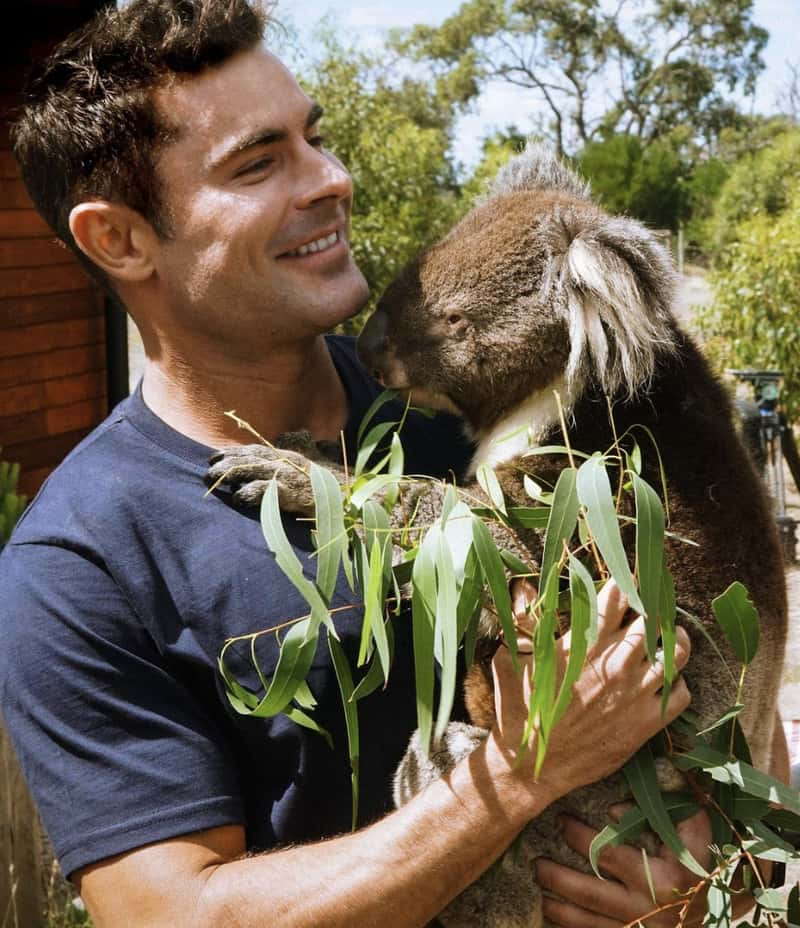
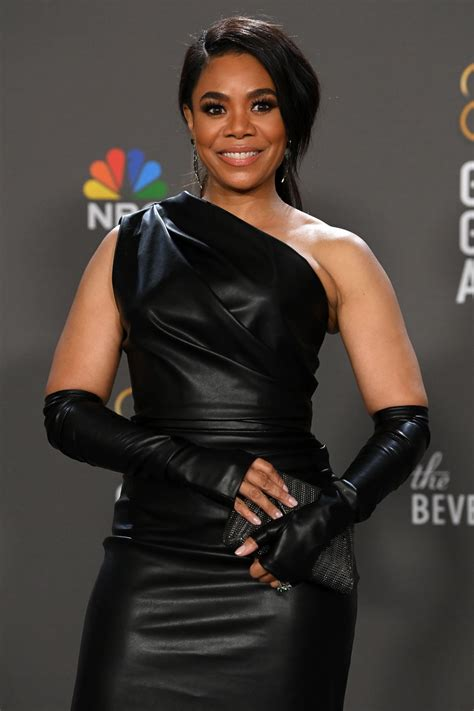

Find out which celebrity you're most likely compatibale with!
Just enter enter everything about yourself in the form below.

He is a huge outdoors person, he always going out on to adventures cuddling with cute animals and advocating for the conservation and sustainability for wildlife and he got big muscles too, all toned and tight that's man knows how to keep himself fit!

having a amazing career in film and television, appearing in franchise/series like Scary Movie, Girls Trip and The Best Man The Final Chapters she also once a co hosted on the Academy Awards in 2022. She has a master's degree in journailsm from New York University and takes on making responsibilities to expand representation in and outside of media.